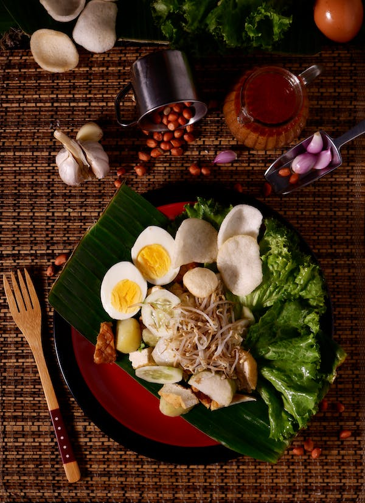

Indonesia
Indonesia, known as the "Spice Island", is famous for its diverse and flavorful cuisine. Indonesian dishes are known for their use of a wide variety of herbs and spices, such as turmeric, ginger, and coriander. Indonesian cuisine is also heavily influenced by Chinese, Indian, and Dutch cuisine.
Popular Dishes
- Nasi Goreng - Fried Rice with various vegetables, meat and egg.
- Sate - Grilled meat skewers, usually served with a peanut sauce.
- Gado-Gado - A vegetable salad with peanut sauce.
- Rendang - A slow-cooked beef or chicken dish with a rich and spicy coconut milk-based sauce.
Ingredients
- Coconut Milk - Used to add creaminess and a subtle sweetness to dishes.
- Peanut - Used to make sauces and as a garnish for dishes.
- Shallot - A common ingredient used to add a mild sweetness and flavor to dishes.
- Chili - Used to add heat and flavor to dishes.
Cooking Methods
- Stewing - A method of cooking food by simmering it in a liquid.
- Grilling - A method of cooking food over an open flame or hot coals.
- Frying - A method of cooking food by submerging it in hot oil.